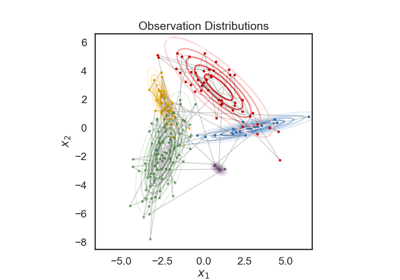

SSM Notebooks
SSM Notebooks#
Notebooks to accompany the State Space Models (SSM) library.

Simple HMM Demo
Simple Linear Dynamical System Demo
Simple Linear Dynamical System Demo
Input Driven HMM
Input Driven Observations (GLM-HMM)
Input Driven Observations (GLM-HMM)
Switching Linear Dynamical System
Switching Linear Dynamical System
Recurrent SLDS
Poisson SLDS
Poisson fLDS
Variational Laplace EM for SLDS
Variational Laplace EM for SLDS
HMM State Clustering
Multi-Population rSLDS